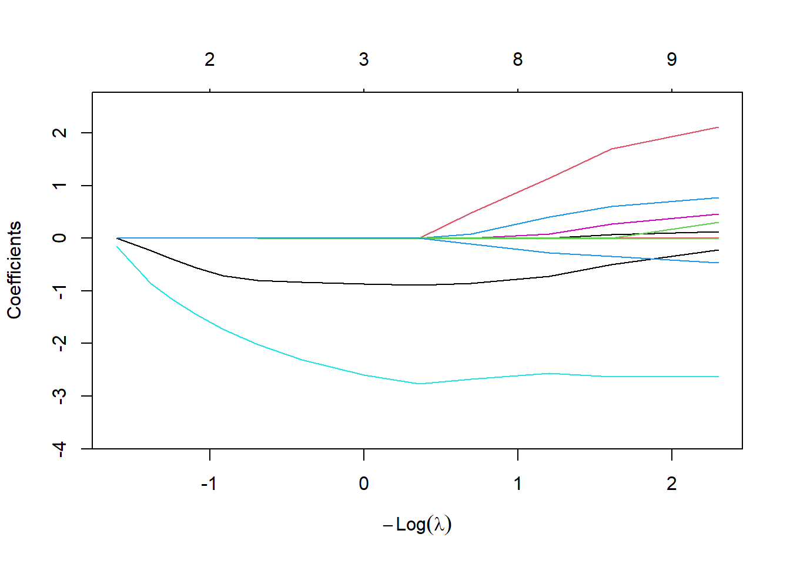
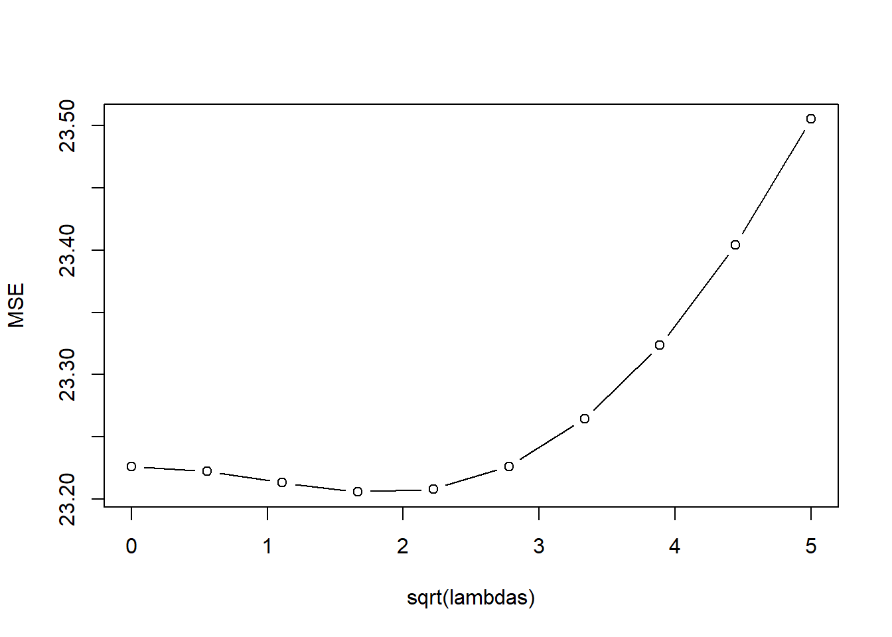
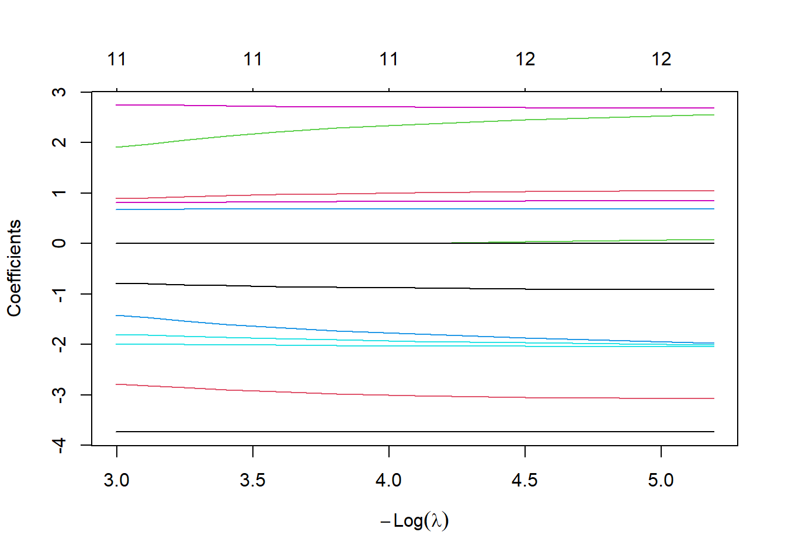
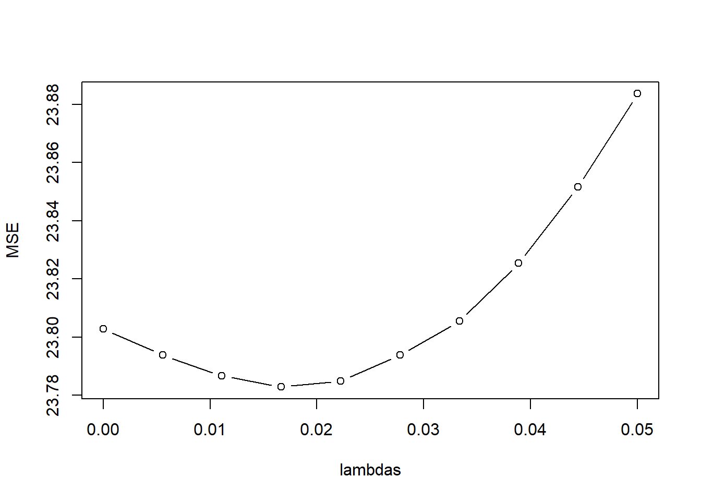

kfoldCV.ridge <- function(K, lambdas, dataset, responseVar){
m <- length(lambdas)
#idx is a shuffled vector of row numbers
idx <- sample(1:nrow(dataset))
#folds partitions the row indices
folds <- split(idx, as.factor(1:K))
#an empty data frame to store the results of each validation
results <- data.frame(fold = rep(1:K, rep(m,K)),
model = rep(1:m, K),
error = 0)
for(k in 1:K){
#split the data into training and testing sets
training <- dataset[-folds[[k]],]
testing <- dataset[folds[[k]],]
#go through each model and estimate MSE
ridge_models <- lm.ridge(reformulate(".",responseVar), training, lambda=lambdas);
for(f in 1:m){
coeff <- coef(ridge_models)[f,]
Y <- testing[,c(responseVar)]
X <- cbind( 1, testing[,names(dataset) != responseVar])
Y.hat <- as.numeric(coeff) %*% as.matrix(t(X))
#calculate the average squared error on the testing data
results[results$fold == k & results$model == f, "error"] <- mean((Y-Y.hat)^2)
}
}
#aggregate over each model, averaging the error
aggregated <- aggregate(error~model, data=results, FUN="mean")
#produces a simple line & dot plot
plot(error ~ sqrt(lambdas), type="b", data=aggregated, ylab="MSE")
# lines(error ~ model, data=aggregated)
print(which(aggregated$error == min(aggregated$error)))
print(lambdas[[which(aggregated$error == min(aggregated$error))]])
return(aggregated)
}38 R11: Ridge and Lasso
38.1 K Fold Validation for Ridge Regression
38.2 Ridge Regression
library(MASS);Warning: package 'MASS' was built under R version 4.2.3lambda_vals <- seq(0,10,1)^2; # Choose lambdas to try.
# lm.ridge needs:
# 1) a model (mpg~. says to model mpg as an intercept
# plus a coefficient for every other variable in the data frame)
# 2) a data set (mtcars, of course)
# 3) a value for lambda. lambda=0 is the default,
# and recovers classic linear regression.
# But we can also pass a whole vector of lambdas, like we are about to do,
# and lm.ridge will fit a separate model for each.
# See ?lm.ridge for details.
ridge_models <- lm.ridge(mpg~., mtcars, lambda=lambda_vals);
# Naively plotting this object shows us how the different coefficients
# change as lambda changes.
plot( ridge_models );
kfoldCV.ridge(32, lambda_vals, mtcars, "mpg")
[1] 5
[1] 16 model error
1 1 12.181558
2 2 9.452096
3 3 7.936502
4 4 7.393522
5 5 7.283203
6 6 7.441021
7 7 7.809000
8 8 8.361948
9 9 9.080131
10 10 9.940278
11 11 10.914771ridge_models$coef 0 1 4 9 16 25
cyl -0.1958895 -0.2854708 -0.5066139 -0.6161717 -0.6591445 -0.6683601
disp 1.6267230 0.2846046 -0.3725236 -0.5766167 -0.6490976 -0.6685263
hp -1.4496794 -1.0078499 -0.8528542 -0.8129980 -0.7775318 -0.7375242
drat 0.4142235 0.4865947 0.5232729 0.5453579 0.5549330 0.5519234
wt -3.5780149 -2.3702010 -1.6545051 -1.3466497 -1.1634754 -1.0318544
qsec 1.4440470 0.8663632 0.4563819 0.3199939 0.2816562 0.2727392
vs 0.1576353 0.1858566 0.2665591 0.3379935 0.3882118 0.4182555
am 1.2377648 1.1337179 0.9930509 0.8779217 0.7836540 0.7053996
gear 0.4759507 0.4979561 0.4415798 0.4078556 0.3938022 0.3845387
carb -0.3170292 -0.9153711 -1.0545303 -0.9681697 -0.8536815 -0.7501713
36 49 64 81 100
cyl -0.6584602 -0.6371174 -0.6089930 -0.5771490 -0.5436589
disp -0.6618424 -0.6410597 -0.6125306 -0.5799961 -0.5457984
hp -0.6949141 -0.6515838 -0.6087390 -0.5671623 -0.5273766
drat 0.5389018 0.5188717 0.4944121 0.4675133 0.4396305
wt -0.9277904 -0.8409367 -0.7659920 -0.6999756 -0.6410990
qsec 0.2700141 0.2662930 0.2599270 0.2510841 0.2404236
vs 0.4315668 0.4322241 0.4239420 0.4097144 0.3918058
am 0.6390688 0.5816137 0.5309703 0.4857926 0.4451943
gear 0.3737460 0.3599879 0.3436658 0.3256615 0.3068348
carb -0.6631350 -0.5906396 -0.5296824 -0.4777057 -0.432798738.3 Ridge Regression With Standardized Data
One problem that we will encounter with Ridge regression (and LASSO) is that it assumes large betas are large because the predictor is important. This is not necessarily true - it could be due to the units of the variable.
Consider a model of mpg based on weight in pounds.
lm(mpg~ I(1000*wt), data=mtcars)
Call:
lm(formula = mpg ~ I(1000 * wt), data = mtcars)
Coefficients:
(Intercept) I(1000 * wt)
37.285126 -0.005344 When we convert weight to pounds (multiply by 1000) then the coefficient is -.005. But if we have wt in 1000s of pounds
lm(mpg~ wt, data=mtcars)
Call:
lm(formula = mpg ~ wt, data = mtcars)
Coefficients:
(Intercept) wt
37.285 -5.344 The coefficient is 1000x as large! For this reason it is a good idea to standardize your data before you apply a shrinkage method. Standardized data requires subtracting the mean and dividing by standard deviation (of that column): \[ Z_{i,j} = \frac{X_{i,j} - \bar{X}_j}{S_{j}}\] No need to standardize the response variable.
mtcars.std <- mtcars
#let's standardize the quantitative predictors
stdcols <- c("cyl","disp","hp","drat","wt","qsec","gear","carb")
for(col in stdcols){
xbar <- mean(mtcars.std[,col])
sd <- sd(mtcars.std[,col])
mtcars.std[,col] <- (mtcars.std[,col]-xbar)/sd
}
lambda_vals <- seq(0,10,1)^2; # Choose lambdas to try.
ridge_models <- lm.ridge(mpg~., mtcars.std, lambda=lambda_vals);
plot( ridge_models );
kfoldCV.ridge(32, lambda_vals, mtcars.std, "mpg")
[1] 5
[1] 16 model error
1 1 12.181558
2 2 9.452096
3 3 7.936502
4 4 7.393522
5 5 7.283203
6 6 7.441021
7 7 7.809000
8 8 8.361948
9 9 9.080131
10 10 9.940278
11 11 10.91477138.4 LASSO Regression
library(glmnet)Loading required package: MatrixLoaded glmnet 4.1-10kfoldCV.LASSO <- function(K, lambdas, dataset, responseVar){
m <- length(lambdas)
#idx is a shuffled vector of row numbers
idx <- sample(1:nrow(dataset))
#folds partitions the row indices
folds <- split(idx, as.factor(1:K))
#an empty data frame to store the results of each validation
results <- data.frame(fold = rep(1:K, rep(m,K)),
model = rep(1:m, K),
error = 0)
for(k in 1:K){
#split the data into training and testing sets
training <- dataset[-folds[[k]],]
testing <- dataset[folds[[k]],]
#go through each model and estimate MSE
for(f in 1:m){
mtc_lasso_lambda <- glmnet(training[,names(dataset) != responseVar], training[,c(responseVar)], alpha = 1, lambda=lambdas[f]);
coeffs <- as.vector(coef(mtc_lasso_lambda))
y.mtc.predict <- coeffs %*% t(cbind(1,testing[,names(dataset) != responseVar]))
results[results$fold == k & results$model == f, "error"] <- mean((y.mtc.predict-testing[,c(responseVar)])^2)
}
}
#aggregate over each model, averaging the error
aggregated <- aggregate(error~model, data=results, FUN="mean")
#produces a simple line & dot plot
plot(error ~ lambdas, type="b", data=aggregated, ylab="MSE")
# print(which(aggregated$error == min(aggregated$error)))
print(paste("best lambdas:", paste(lambdas[which(aggregated$error == min(aggregated$error))], collapse=",")))
return(aggregated)
}#LASSO mpg on mtcars
lambda_vals <- c(0,.1,.2,.3,.5,.7, 1, 1.5, 2, 2.5, 3, 3.5, 4, 5)
kfoldCV.LASSO(32, lambda_vals, mtcars.std, "mpg")
[1] "best lambdas: 0.7" model error
1 1 12.139522
2 2 9.401635
3 3 9.208783
4 4 8.945935
5 5 8.314812
6 6 8.013806
7 7 8.357635
8 8 9.960995
9 9 12.241522
10 10 14.956380
11 11 18.398062
12 12 22.475571
13 13 27.129122
14 14 36.870189LASSO.fits <- glmnet(mtcars[,-1], mtcars[,1], alpha=1, lambda=lambda_vals)
plot(LASSO.fits, label=TRUE, xvar="lambda")
LASSO_coeff<- t(coef(LASSO.fits))
#colnames(LASSO_coeff) <- c("intercept",names(mtcars)[-1])
LASSO_coeff14 x 11 sparse Matrix of class "dgCMatrix" [[ suppressing 11 column names '(Intercept)', 'cyl', 'disp' ... ]]
s0 20.58164 . . . . -0.1526208
s1 24.29182 -0.2320135 . . . -0.8596190
s2 26.21643 -0.3916771 . . . -1.1507654
s3 28.14090 -0.5512556 . . . -1.4420334
s4 30.06537 -0.7108337 . . . -1.7333021
s5 31.87369 -0.8000158 . -0.002226427 . -2.0223414
s6 33.59349 -0.8355844 . -0.006175353 . -2.3084431
s7 35.31356 -0.8713207 . -0.010120873 . -2.5944626
s8 36.34612 -0.8930789 . -0.012481712 . -2.7659212
s9 35.87185 -0.8564098 . -0.014070252 0.07915497 -2.6716570
s10 32.27520 -0.7185199 . -0.014111007 0.40765131 -2.5704279
s11 26.92701 -0.5030523 . -0.013211244 0.60633782 -2.6290418
s12 20.12195 -0.2164116 . -0.013112947 0.77468208 -2.6356369
s13 12.32700 -0.1194297 0.01369736 -0.021693022 0.78186836 -3.7504495
s0 . . . . .
s1 . . . . .
s2 . . . . .
s3 . . . . .
s4 . . . . .
s5 . . . . .
s6 . . . . .
s7 . . . . .
s8 . . . . .
s9 . . 0.4869054 . -0.1085726
s10 0.08195105 0.003182207 1.1364003 . -0.2812566
s11 0.26537365 0.068664832 1.6929202 . -0.3422762
s12 0.45898572 0.123968843 2.1142688 0.3046746 -0.4637967
s13 0.82638838 0.316450552 2.5192826 0.6476344 -0.185440038.5 Boston Dataset Example
data("Boston")
library(glmnet)
#Standardize Variables
Boston.std <- Boston
for(i in 1:(ncol(Boston.std)-1)){
Boston.std[,i] <- (Boston.std[,i]-mean(Boston.std[,i]))/sd(Boston.std[,i])
}
lambda_vals <- seq(0,5,length.out=10)^2; # Choose lambdas to try.
ridge_models <- lm.ridge(medv ~ . , Boston.std, lambda=lambda_vals);
plot( ridge_models );
kfoldCV.ridge(4, lambda_vals, Boston.std, "medv")
[1] 4
[1] 2.777778 model error
1 1 23.22624
2 2 23.22228
3 3 23.21316
4 4 23.20575
5 5 23.20800
6 6 23.22627
7 7 23.26433
8 8 23.32364
9 9 23.40416
10 10 23.50516#LASSO
lambda_vals <- seq(0,.05,length.out=10)
LASSO.fits <- glmnet(Boston.std[,names(Boston.std)!="medv"], Boston[,"medv"], alpha=1, lambda=lambda_vals)
plot(LASSO.fits, label=TRUE, xvar="lambda")
kfoldCV.LASSO(10, lambda_vals, Boston.std, "medv")Warning in split.default(idx, as.factor(1:K)): data length is not a multiple of
split variable
[1] "best lambdas: 0.0166666666666667" model error
1 1 23.80285
2 2 23.79381
3 3 23.78668
4 4 23.78288
5 5 23.78492
6 6 23.79383
7 7 23.80548
8 8 23.82536
9 9 23.85166
10 10 23.88365resultsTable <- t(as.matrix(coef(LASSO.fits)))
row.names(resultsTable) <- sort(lambda_vals,decreasing=TRUE)
round(resultsTable,3) (Intercept) crim zn indus chas nox rm age
0.05 22.533 -0.783 0.891 0.000 0.674 -1.799 2.747 0.000
0.0444444444444444 22.533 -0.799 0.907 0.000 0.677 -1.814 2.744 0.000
0.0388888888888889 22.533 -0.816 0.927 0.000 0.678 -1.838 2.735 0.000
0.0333333333333333 22.533 -0.832 0.947 0.000 0.680 -1.863 2.726 0.000
0.0277777777777778 22.533 -0.849 0.967 0.000 0.682 -1.887 2.718 0.000
0.0222222222222222 22.533 -0.865 0.987 0.000 0.684 -1.911 2.708 0.000
0.0166666666666667 22.533 -0.882 1.007 0.000 0.686 -1.935 2.700 0.000
0.0111111111111111 22.533 -0.898 1.029 0.031 0.686 -1.968 2.693 0.000
0.00555555555555556 22.533 -0.913 1.053 0.084 0.684 -2.006 2.687 0.000
0 22.533 -0.928 1.078 0.138 0.683 -2.049 2.680 0.017
dis rad tax ptratio black lstat
0.05 -2.789 1.914 -1.424 -1.988 0.806 -3.732
0.0444444444444444 -2.818 1.971 -1.471 -1.992 0.810 -3.730
0.0388888888888889 -2.858 2.052 -1.537 -2.000 0.815 -3.730
0.0333333333333333 -2.898 2.131 -1.601 -2.007 0.820 -3.730
0.0277777777777778 -2.937 2.207 -1.662 -2.013 0.824 -3.730
0.0222222222222222 -2.978 2.287 -1.727 -2.020 0.829 -3.731
0.0166666666666667 -3.017 2.363 -1.788 -2.027 0.834 -3.730
0.0111111111111111 -3.050 2.456 -1.874 -2.037 0.839 -3.733
0.00555555555555556 -3.079 2.556 -1.974 -2.049 0.845 -3.737
0 -3.100 2.658 -2.074 -2.061 0.851 -3.745